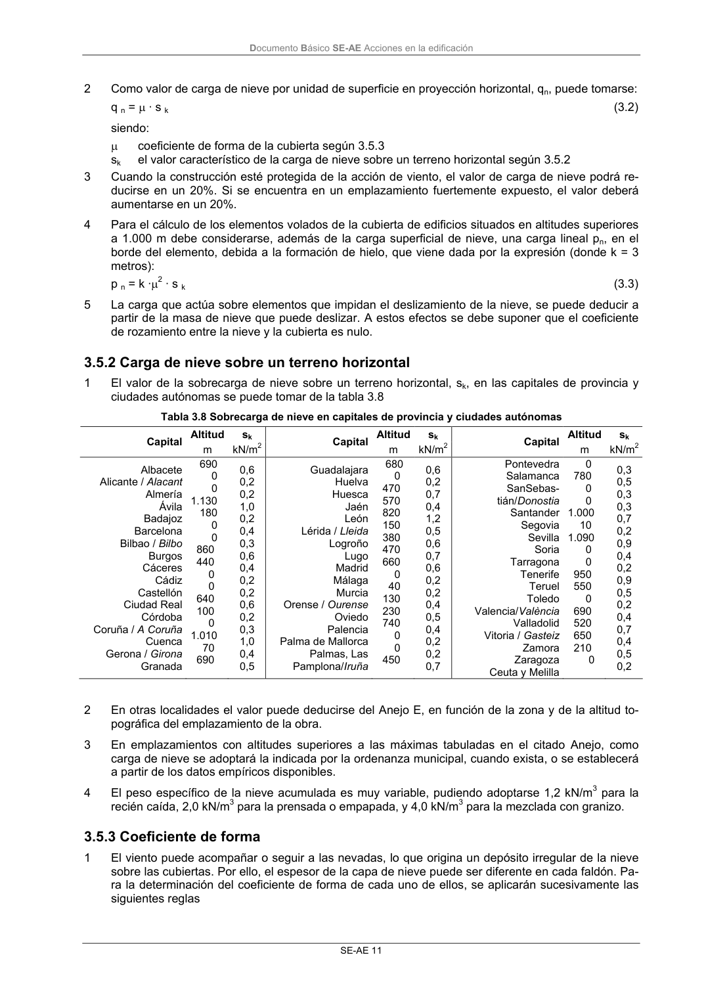

DB-SE-AE Acciones en la edificación · edición 2009-04 · capa oficial
Documento DB-SE-AE-oficial · SHA-256 del PDF 26116e5088955f0c6963a6187270cad282e1e7bf5a53a90f695c8fa50b4e4487
Copia fiel del PDF fuente · Fuente oficial
Ficha de la disposición en la fuente oficial
Formatos: JSON del segmento · Markdown
3.5.2 Carga de nieve sobre un terreno horizontal 1 El valor de la sobrecarga de nieve sobre un terreno horizontal, sk, en las capitales de provincia y ciudades autónomas se puede tomar de la tabla 3.8 Tabla 3.8 Sobrecarga de nieve en capitales de provincia y ciudades autónomas Altitud sk Altitud sk Altitud sk Capital m kN/m2 Capital m kN/m2 Capital m kN/m2 Albacete Alicante / Alacant Almería Ávila Badajoz Barcelona Bilbao / Bilbo Burgos Cáceres Cádiz Castellón Ciudad Real Córdoba Coruña / A Coruña Cuenca Gerona / Girona Granada 690 0 0 1.130 180 0 0 860 440 0 0 640 100 0 1.010 70 690 0,6 0,2 0,2 1,0 0,2 0,4 0,3 0,6 0,4 0,2 0,2 0,6 0,2 0,3 1,0 0,4 0,5 Guadalajara Huelva Huesca Jaén León Lérida / Lleida Logroño Lugo Madrid Málaga Murcia Orense / Ourense Oviedo Palencia Palma de Mallorca Palmas, Las Pamplona/Iruña 680 0 470 570 820 150 380 470 660 0 40 130 230 740 0 0 450 0,6 0,2 0,7 0,4 1,2 0,5 0,6 0,7 0,6 0,2 0,2 0,4 0,5 0,4 0,2 0,2 0,7 Pontevedra Salamanca SanSebas- tián/Donostia Santander Segovia Sevilla Soria Tarragona Tenerife Teruel Toledo Valencia/València Valladolid Vitoria / Gasteiz Zamora Zaragoza Ceuta y Melilla 0 780 0 0 1.000 10 1.090 0 0 950 550 0 690 520 650 210 0 0,3 0,5 0,3 0,3 0,7 0,2 0,9 0,4 0,2 0,9 0,5 0,2 0,4 0,7 0,4 0,5 0,2 2 En otras localidades el valor puede deducirse del Anejo E, en función de la zona y de la altitud to- pográfica del emplazamiento de la obra. 3 En emplazamientos con altitudes superiores a las máximas tabuladas en el citado Anejo, como carga de nieve se adoptará la indicada por la ordenanza municipal, cuando exista, o se establecerá a partir de los datos empíricos disponibles. 4 El peso específico de la nieve acumulada es muy variable, pudiendo adoptarse 1,2 kN/m3 para la recién caída, 2,0 kN/m3 para la prensada o empapada, y 4,0 kN/m3 para la mezclada con granizo.
